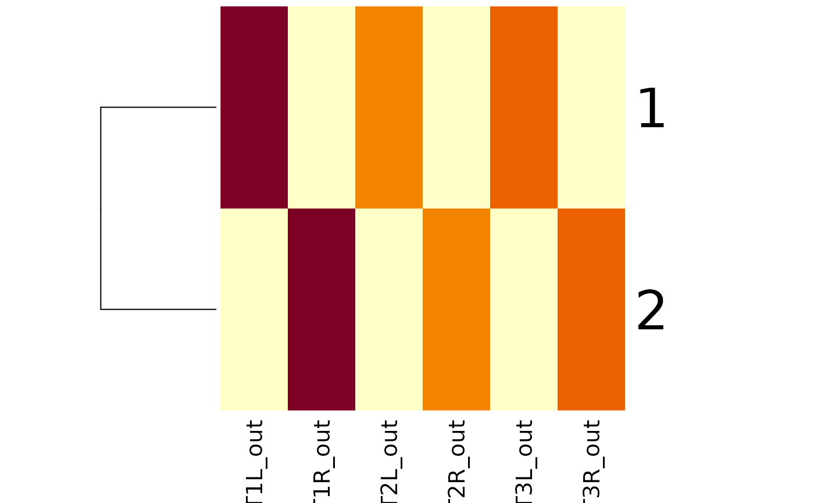

manc_leg_summary summarises I/O in the main leg
neuropils.
manc_side_summary summarises connections within all of
the ROIs that have an L or R designation.
Usage
manc_leg_summary(ids, long = FALSE, other = FALSE, conn = manc_neuprint())
manc_side_summary(ids, long = FALSE, conn = manc_neuprint())Arguments
- ids
A set of body ids in any form understandable to
manc_ids- long
Whether to return results in wide (default) or long format.
- other
Whether to return the sum of all other neuropils as an extra column
other.- conn
Optional, a
neuprint_connectionobject, which also specifies the neuPrint server. Defaults tomanc_neuprint()to ensure that query is against the VNC dataset.
Value
a data.frame with one row per neuron (when long=FALSE) or one
row per ROI/IO combination (when long=TRUE). Note that out
columns refer to output synapses from the given bodyid onto downstream partners.
Examples
dnals=manc_leg_summary(c(10126, 10118))
dnals
#> # A tibble: 2 × 13
#> bodyid T1L_in T1L_out T1R_in T1R_out T2L_in T2L_out T2R_in T2R_out T3L_in
#> <dbl> <int> <int> <int> <int> <int> <int> <int> <int> <int>
#> 1 10126 303 6987 0 0 203 3695 0 0 211
#> 2 10118 0 0 366 6718 0 0 224 3865 0
#> # ℹ 3 more variables: T3L_out <int>, T3R_in <int>, T3R_out <int>
manc_leg_summary(c(10126, 10118), long=TRUE)
#> Loading required namespace: tidyr
#> # A tibble: 24 × 5
#> bodyid weight soma_neuromere side polarity
#> <dbl> <int> <chr> <chr> <chr>
#> 1 10126 303 T1 L in
#> 2 10126 6987 T1 L out
#> 3 10126 0 T1 R in
#> 4 10126 0 T1 R out
#> 5 10126 203 T2 L in
#> 6 10126 3695 T2 L out
#> 7 10126 0 T2 R in
#> 8 10126 0 T2 R out
#> 9 10126 211 T3 L in
#> 10 10126 4575 T3 L out
#> # ℹ 14 more rows
heatmap(data.matrix(dnals[grep("_out", colnames(dnals))]),
Colv = NA, scale = 'none')

# \donttest{
dnls=manc_leg_summary('class:descending')
heatmap(data.matrix(dnls[grep("_out", colnames(dnls))]),
Colv = NA, scale = 'none')
 # }
manc_side_summary('DNp01')
#> bodyid L_in L_out R_in R_out
#> 1 10000 0 0 0 0
#> 2 10002 0 0 0 0
# }
manc_side_summary('DNp01')
#> bodyid L_in L_out R_in R_out
#> 1 10000 0 0 0 0
#> 2 10002 0 0 0 0